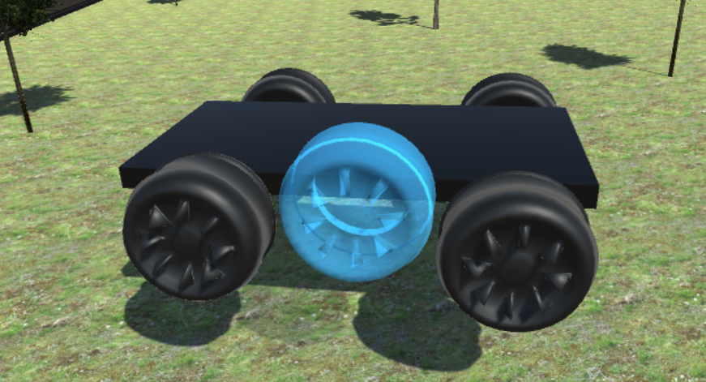
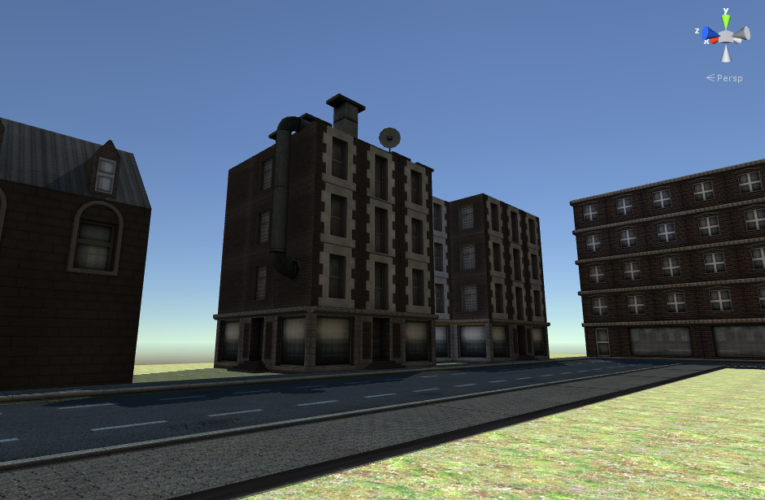
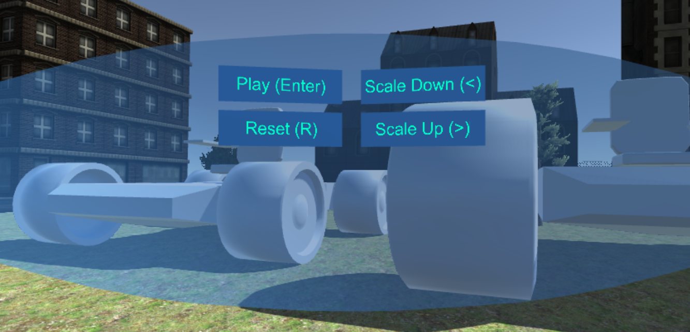
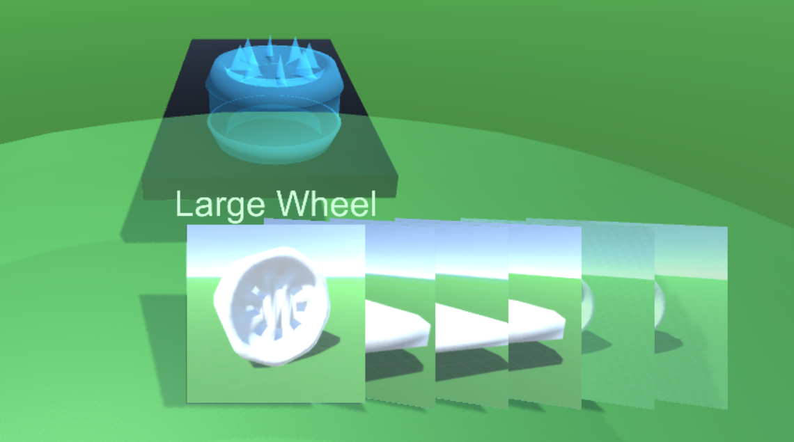

Checkpoint 1
Joe Brosnihan
My goal throughout this checkpoint was to allow the player to attach wheels to a chasis. Here is the player placing the first wheel onto the chasis. It is placed according to a raycast from the camera.
The player can attach an arbitrary number of pieces to any side of a surface.

The player can then drive the vehicle they have built by pressing Start.
Chris Castellano
My goal throughout this checkpoint was to create a sandbox, which would be the environment for the players to interact in. My first plan of action was to create a city, which would be the area in which the players start off in.
They would be able to interact with the props, which will be objects the two players will use to build a vehicle of their choice.

There is also another biome - the desert, which the players can access from the city.

There is also some water in the desert in order to make the place more lively.
My next plan of action is to integrate procedural generation with the assets and fix bounds on the map so that players can't drive off the world. Also, I will add different types of assets to make the scene more complete.
Galen Stetsyuk
Models were made to account for collision placement system. Models will "snap" based on origin location.
UI with tiles implemented for switching objects to place on the vehicle.
Some Model with thrusters and particle systems.
The UI needs to be improved in terms of functionality, and physics characteristics need to be implemented to more accurately reflect object states when placed on vehicle.
Mikhail Sorokin
Using the integrated networking system in Unity, which is called UNet, I was able to use an in-built GUI in order to make it create a sample environment for two players to be placed in.

Created a placeholder avatar which will be useful in order to see position and rotation reflected across the network. (Seen below).
Both players can see each other, with one player being a different color from the other in order to distinguish the two. Their rotations with the headset are matched and they can see each other in the same world. (Seen below).


In conclusion, some issues I have been having with the multiplayer in VR is that it looks a bit choppy and more optimization is needed. Fixing this problem will be my goal to achieve as I am progressing towards the second checkpoint.
Checkpoint 2
Joe Brosnihan
The user can now attach any arbitrary piece selected from the catalogue of pieces displayed in Galen's UI.
We did not add Axles because we decided last checkpoint to use Wheel Colliders instead.
Chris Castellano
Map has been developed with much more detail. Road system is completely finished. Added areas such as a forest and baseball field.
Galen Stetsyuk
UI tiles have much better scrolling functionailty, and return the current object to be placed.
Other models of pipes
Mikhail Sorokin
I added building functionality for the two players. If one player places an object in one world, then the other player will be able to see it spawn in their client view. In the picture, there was just a test with multiple wheels to see if this information could be sent both ways.

A lot of wheels in front of the player's face.
I fixed the choppiness, which was evident from last time. The movement isn't flawless, which is expected, but it is good enough for a demo, especially for a VR one.
For the last checkpoint, I plan on fixing some issues that may occur with building over the network and making sure that driving is simulated over the network as well.
Final Checkpoint
Joe Brosnihan
Added ability to rotate pieces as they are being placed. Helped integrate the building of parts over the network. Implemented steering of vehicle and movement of the entire vehicle across all axis of rotation when placing parts.

Chris Castellano
Map has been fully developed. Roads are complete and connected. All assets and buildings are placed and colliders have been attached. I decided to put more work into the actual map development rather than add a small procedural asset script.
Deleted various components off the buildings in order to decrease triangles and increase performance.
Added a procedural skybox.
Galen Stetsyuk
Added all the models you will see on the UI in game, as well as made improvements to the existing ones. Better UI functionality with the d-pad on the xbox controller. Ui transitions smoothly, and models were reioriented to allow for easier placement. Engine Sounds were also added when the vehicle is driven.
Mikhail Sorokin
Added networking between two local players, replicated placement of parts and vehicle movement. Sound was also finished and implemented.